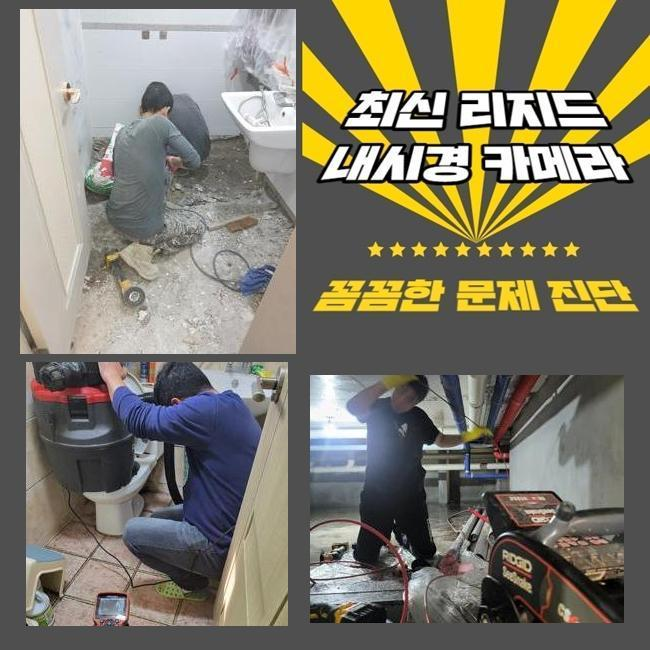
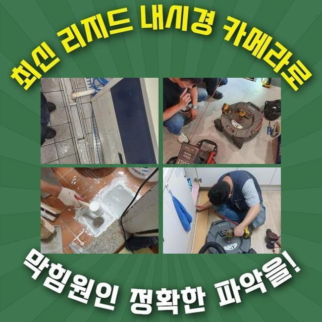
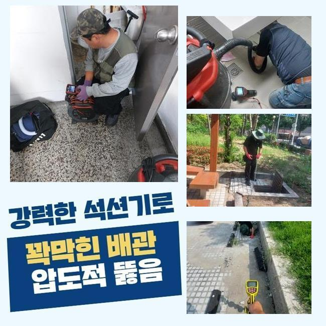
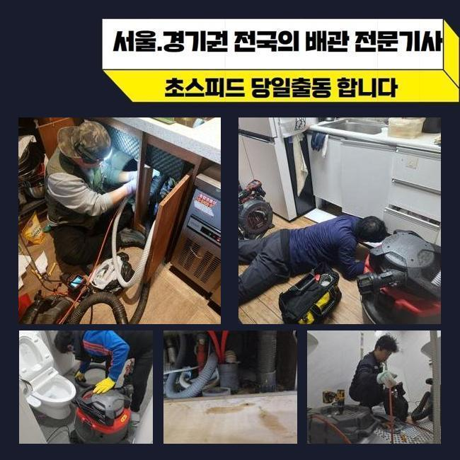
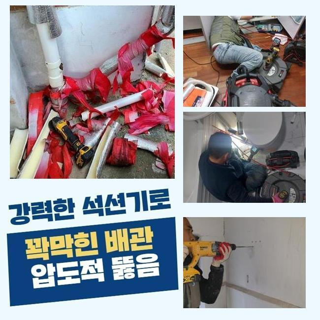
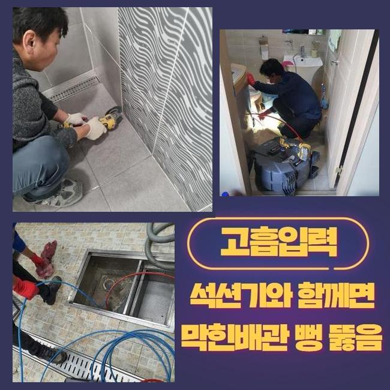
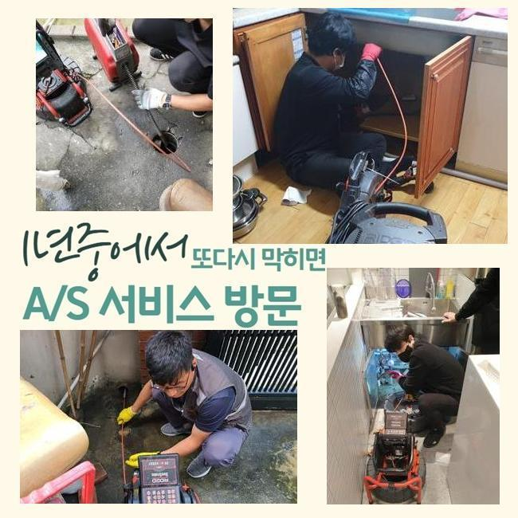

🏠 은평구 대조동하수도막힘 증산동 고압세척비용 배관뚫는업체
서울 은평구 하수구막힘 전문 시공 후기

📋 작업 개요
- 위치: 서울 은평구, 은평구, 서울
- 서비스 유형: 하수구막힘, 배관막힘, 누수수리, 역류해결, 뚫는업체, 배관청소, 고압세척
- 작업 일시: 2025. 2. 22. 17:29
- 업체명: 하수구수사대 (010-5615-2118)
🔍 문제 상황
은평구 대조동하수도막힘 증산동 고압세척비용 배관뚫는업체
세탁실이나 욕실은 필수불가결한 곳이죠
그래서 생활하다가 급작스럽게 배수기능에 문제가 생기면 그에 대한 파급력은 말로다 형언하기 어려울겁니다
하지만 물내림이 원활하지 않은 사태를 무시하고 넘어가시는 경우가 많죠
시간이 지난뒤 없어져버리거나 최소한 악화되지는 않겠다고 간주하기 때문이죠
반면 실상은 그것과 다르죠
그와 관련지어 그것들이 발현되었을 때 즉각적으로 소제한다면 심각한 정황을 막을수 있죠
물빠짐이 느리게 된다는건 배수관 안쪽에서 하수 배출을 막아세우는 찌꺼기가 있단 소리죠
오물이 그위에 적체되어 더더욱 곤란한 상황으로 발전하기 이전에 전문가를 수소문하여 적합하게 검정을 실시하고 세정해야 한답니다
저저번주에 내방드린 지점을 세부적으로 알려드리도록 할게요
이같은 문제들로 고민에 처하신 분들에게 보탬이 됐으면 합니다
저희측이 방문한 장소는 빌딩 안에 위치한 음식점이에요
의뢰자께선 욕실배관과 주방배수시설까지 전면적으로 물흐름이 멈췄다고 말씀하셨죠

🔎 원인 분석
💡 전문가 진단: 정밀 진단 장비를 사용하여 슬러지의 고착 여부를 판명하고 타격/세척 작업을 실시했습니다.
전적으로 고장나버린건 아니었으며 하루지나면 소멸되었기에 다음에 고치자는 생각을 갖고 지속해서 쓰셨다고 합니다
이러한 결과물로 막힘이 심화되어서 물빠짐이 안되었으며 물이 역류되는 사태까지 동반된 것이랍니다
배수관의 구조는 난삽하고 비좁은 길목으로 형성돼 있죠
그렇기에 맨눈으로 살펴봐서는 슬러지가 얼마만큼 상존하는지 알기가 어렵답니다
그래서 방문지로 넘어갈때는 내시경cctv를 필히 갖추어야 한답니다
해당 기기의 끝단에는 소형방수카메라가 있어요
이것으로 파악이 힘겨운 파이프 하부까지 선명하게 간파할수가 있는것이고 잔재들의 형태나 특징들도 알아낼수 있답니다
내시경설비를 통해 확인해보니 배수관 내부는 상당히 지저분했습니다
석회물질을 비롯하여 여러가지의 노폐물들이 적층을 이루고 있었답니다
해당 잔존물들이 뒤엉켜서 바위처럼 견고해진 상태였기 때문에 좁디좁은 하수관구멍을 틀어막아 배수기능이 똑바로 안되었답니다
그냥 내버려둔다면 몸집을 더더욱 키워가면서 배관에서 떨어지지 않게 돼요
그렇게 된다면 더더욱 사태가 악화되는 것이므로 신속하게 시공하기로 했어요
이러한 상황에서 활용하는 기계는 플렉스샤프트라는 것인데요

🔧 작업 과정
좁아진 배관틈으로도 쉬이 투입가능한 강점이 존재하죠
장비끝에는 노커라는 쇠붙이가 붙어서 빠르게 회전하며 관로안에 상존하는 굳어진 여러 노폐물들을 부스러뜨립니다
전면적으로 분쇄공정을 진행했는데요
드릴에 기기를 체결한뒤 샤프트장비를 작동하여 단단해진 이물들을 소멸시키기 시작하였죠
어떤곳에 슬러지들이 집중되어 있는지 파악해야 하므로 내시경cctv를 통한 검사도 같이 하였습니다
내시경설비를 통해 누적량이 많은곳을 중심으로 시공해나가면 한층 조속히 처리할수 있답니다
배관의 벽면이 훼손되지않게 조심하며 이물질만 정확히 조준하여 분쇄를 해나갔죠
혹여 세정을 하는 과정에서 하수관에 충격을 가하면 크랙이 일어나 누수증상이 생길수도 있답니다
그렇기에 내시경설비나 플렉스샤프트 등의 기기가 구비되는 것이 중요하겠으나 담당자의 테크닉도 훌륭해야 하겠죠
찌꺼기가 집중된 구역을 청결하게 소제한뒤에 미세한 성분이라도 남지 않도록 처리하였답니다
그리고 즉시 배수테스트를 진행했죠
많은양의 오수를 한꺼번에 하수관으로 투입시켰고 정체하거나 솟아오르는 증상은 없는지에 대해 점검하였어요
신속하게 소멸되는걸 검증한후 바로 근접한 배수설비로 이동하게 되었죠
여기서 정리한다면 바로 사용하기에는 괜찮을수 있으나 몇달뒤 막힘증세가 나타날 확률이 상존하기 때문이었답니다
욕실의 가지배관과 결부된 횡주배관도 검사해서 노폐물 누적 상황을 체크하기로 했어요
화장실의 배관에서 정체가 나타나면 관련된 메인관까지 찌꺼기가 누증되었을 가망이 커서 전면적 관로청소를 수행하는게 바람직하답니다
그러하기에 횡주관으로 이동해 조사를 철저히 이행했고 저희측의 생각과 유사하게 고착화된 이물들을 목견하게 되었네요
횡주관과 관련된 개별배수관까지 전반적으로 샤프트장비를 이용하여 정비하였고 잔재들이 떨어져나간 말끔해진 하수관을 포착할수가 있었어요
머리카락이나 물티슈 등 녹아내리기 힘든 쓰레기들은 샤워나 세안을 하시면서 다시 쌓일 수 있죠
그래서 6개월에 1회 정도는 관련기술자에게 의뢰하여 관리해 나가시는게 좋아요
그리고 오래도록 배수관을 보존하는 대책들도 인지하시기 쉽게 잘 안내해드렸죠


✅ 작업 완료
관로에 이상이 생긴다면 삶에 큰 고충을 감내해야 하기에 애초에 그러한 일이 안나타나게 섬세하게 방예를 실시하는게 바람직하겠죠
늦은 시간에도 영업한다는 내용도 말씀드렸답니다
오래된 주거지에선 누수증세도 빈번히 나타나기에 이에 대한 수선의뢰도 많답니다
이에 곧바로 뚫음뿐만 아니라 누수시공도 한다는 사실을 말씀드렸답니다
어떤구간에서 막힘이 생겨났고 언제부터 그랬는지 문자나 전화로 알려주시면 더 빠르게 상담해드릴 수 있습니다
그러고 나서 예약하신 때에 전문기술자가 도구들을 챙겨서 출동하고 있사오니 부담없이 전화주시길 당부드립니다




⚠️ 베란다 누수 및 방수 관리 방법
- ✅ 비가 많이 올 때 창틀 주변이나 아래층 천장에 얼룩이 생기는지 정기적으로 확인해 보세요.
- ✅ 우수관 주변 실리콘 마감이 들뜨거나 깨진 틈새가 있는지 손상 여부를 수시로 체크하세요.
- ✅ 베란다 바닥 타일의 줄눈(메지)이 소실되면 그 틈으로 물이 침투하여 누수가 유발됩니다.
- ✅ 누수 의심 증상 발견 시 방치하면 아래층 손실이 커지므로 즉시 전문가의 진단을 받으십시오.
💡 핵심 정리
- 확실한 장비 작업(내시경 점검 및 샤프트 스케일링)으로 원인을 뿌리 뽑습니다.
- 작업 후 1년 이내에 동일한 부위 재발 시 100% 무상 A/S 서비스를 보장합니다.
- 서울 · 경기 · 인천 전 지역에 24시간 언제든 긴급 출동할 수 있도록 항시 대기 중입니다.
❓ 자주 묻는 질문 (FAQ)
🚨 서울 은평구 하수구막힘 문제로 고민이신가요?
정확한 원인 진단과 확실한 시공으로 재발 없는 해결을 약속드립니다.
24시간 긴급 출동 | 서울 · 경기 · 인천 전지역 | 1년 내 재발 시 무상 A/S